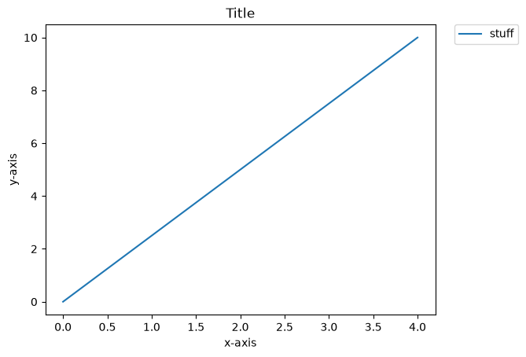
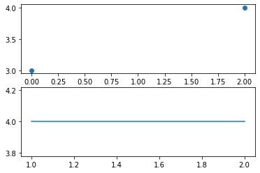
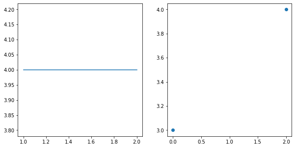
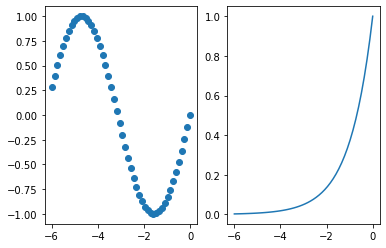
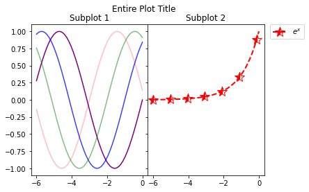
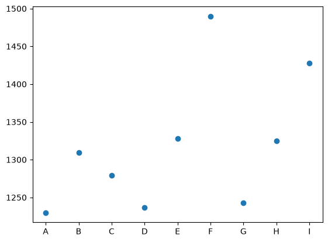
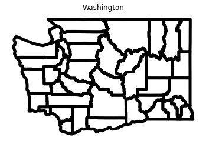

More matplotlib & pandas#
Today, we will cover more important matplotlib functions and get an introduction into the pandas library.
# preliminaries
import matplotlib.pyplot as plt
import pandas as pd
import geopandas as gpd
import numpy as np
---------------------------------------------------------------------------
ModuleNotFoundError Traceback (most recent call last)
Cell In[1], line 4
1 # preliminaries
2
3 import matplotlib.pyplot as plt
----> 4 import pandas as pd
5 import geopandas as gpd
6 import numpy as np
ModuleNotFoundError: No module named 'pandas'
Matplotlib#
Let’s make some fake data:
data = np.linspace(0, 10, 5)
And a nice plot to go along with it:
plt.plot(data,
label = 'stuff')
plt.legend(bbox_to_anchor=(1.05, 1), loc='upper left', borderaxespad=0.)
plt.title('Title')
plt.xlabel('x-axis')
plt.ylabel('y-axis')
Text(0, 0.5, 'y-axis')

Matplotlib Figures#
What matplotlib produces is a Figure object that is then printed off. To create and assign variable name to a Figure object, we can simply use plt.figure. This will create an empty figure that we can then manipulate.
fig = plt.figure()
<Figure size 432x288 with 0 Axes>
For example, we can add subplots (AxesSubplot objects):
ax1 = fig.add_subplot(2,1,1)
ax2 = fig.add_subplot(2,1,2)
One feature of Jupyter notebooks is that plots reset after each cell. This means you must put all the necessary lines for visualizing a given plot into one cell. For example, if I tried to plot ax1 and ax2 right now, I wouldn’t visualize anything:
ax1.scatter([0,2],[3,4])
ax2.plot([1,2],[4,4])
[<matplotlib.lines.Line2D at 0x16c95f4e248>]
If I instead include all necessary lines for plotting into one cell, I get what I want:
fig = plt.figure()
ax1 = fig.add_subplot(2,1,1)
ax2 = fig.add_subplot(2,1,2)
ax1.scatter([0,2],[3,4])
ax2.plot([1,2],[4,4])
[<matplotlib.lines.Line2D at 0x16c95fbc448>]

Note: In fig.add_subplot(a, b, c), a is the number of rows, b is the number of columns and c is the current subplots order in the list. For example, I can swap the order of the two plots above and plot them side by side:
fig = plt.figure(figsize=(10,5))
ax1 = fig.add_subplot(1, 2, 2) # switched to 1 row, 2 columns, and 2nd in line
ax2 = fig.add_subplot(1, 2, 1) # switched to 1 row, 2 columns, and 1st in line
ax1.scatter([0,2],[3,4])
ax2.plot([1,2],[4,4])
[<matplotlib.lines.Line2D at 0x16c962c7bc8>]

You can also use the plt.subplots(row_count, column_count) function to generate a numpy array of subplots:
fig, axes = plt.subplots(1,2)
x = np.linspace(-6,0,50)
axes[0].scatter(x, np.sin(x))
axes[1].plot(x,np.exp(x))
[<matplotlib.lines.Line2D at 0x16c963c5888>]

There are lots of ways to tweak your plots. I will refer you to the full list to not bore you: click here. But, here are is a little laundry list you may go through if you like:
<matplotlib.legend.Legend at 0x16c966e4888>

Pandas#
Pandas is a powerful data tool in Python we will discuss this week. First, Pandas is most useful as a file reader.
# name_you_want = pd.read_csv("path_to_file")
horsedata = pd.read_csv("https://raw.githubusercontent.com/garrett-kepler/Math-300----Mathematical-Computing/refs/heads/main/Datasets/Horses.csv")
Note that this is reading from a link. You can also download the file and copy the path to that file on your device.
Once the data is read, we can view it:
horsedata
| Horse | Race Finish Time | |
|---|---|---|
| 0 | A | 1230 |
| 1 | B | 1309 |
| 2 | C | 1279 |
| 3 | D | 1237 |
| 4 | E | 1328 |
| 5 | F | 1490 |
| 6 | G | 1243 |
| 7 | H | 1325 |
| 8 | I | 1428 |
While we read the file as a .csv file, Python will remember it as a pd.DataFrame:
type(horsedata)
pandas.DataFrame
We can visualize the data as well:
plt.scatter(horsedata['Horse'], horsedata['Race Finish Time'])
<matplotlib.collections.PathCollection at 0x2972288f380>

It’s friendly relative geopandas is equally as useful for geometric data:
washcounties = gpd.read_file(r"C:\Users\Garrett\Downloads\WA_County_Boundaries\WA_County_Boundaries.shp")
washcounties
| OBJECTID | JURISDICT_ | JURISDIC_1 | JURISDIC_2 | JURISDIC_3 | JURISDIC_4 | JURISDIC_5 | JURISDIC_6 | EDIT_DATE | EDIT_STATU | EDIT_WHO | GLOBALID | geometry | |
|---|---|---|---|---|---|---|---|---|---|---|---|---|---|
| 0 | 2229338 | 25 | 4 | Grant | Grant County | 13 | 53025 | None | 2018-03-15T00:26:49Z | 1 | TSTE490 | {1DF7C3DA-B145-411F-9483-53BEFDA1C019} | POLYGON ((-13245041.204 6100462.041, -13245049... |
| 1 | 2231411 | 4698174 | 4 | Pend Oreille | Pend Oreille County | 26 | 53051 | None | 2025-11-20T00:40:36Z | 0 | TSTE490 | {7D6E6B7F-1F96-444C-B6FE-F4E29312CA8C} | POLYGON ((-13028207.663 6215102.773, -13028213... |
| 2 | 2231418 | 4698173 | 4 | Stevens | Stevens County | 33 | 53065 | None | 2025-11-21T22:25:29Z | 0 | TSTE490 | {AE9EAF1C-9552-4656-BC2B-948511BFD986} | POLYGON ((-13072259.109 6271668.868, -13072256... |
| 3 | 2233491 | 33 | 4 | Garfield | Garfield County | 12 | 53023 | None | 2022-06-23T23:47:50Z | 1 | TSTE490 | {270AA9AE-163D-4CB1-9B9D-9D2D12AD60F9} | POLYGON ((-13077215.155 5893282.479, -13076922... |
| 4 | 2233852 | 8 | 4 | Island | Island County | 15 | 53029 | None | 2018-03-15T00:26:49Z | 1 | TSTE490 | {ED2D90D3-E3E3-433A-8B6A-B061A1157FFD} | POLYGON ((-13645903.473 6175425.382, -13645833... |
| 5 | 2234461 | 20 | 4 | Grays Harbor | Grays Harbor County | 14 | 53027 | None | 2025-06-18T23:38:53Z | 1 | TSTE490 | {6325153C-E0D2-4EA2-B20A-6F6E8005170C} | POLYGON ((-13818358.748 6029600.620, -13817157... |
| 6 | 2234462 | 4692894 | 4 | Thurston | Thurston County | 34 | 53067 | None | 2025-06-18T23:38:53Z | 0 | TSTE490 | {93DFF6C6-3215-44BF-9AA6-70F3FA577C68} | POLYGON ((-13668140.191 5968532.266, -13667828... |
| 7 | 2234463 | 27 | 4 | Lewis | Lewis County | 21 | 53041 | None | 2025-06-18T23:38:53Z | 1 | TSTE490 | {AB37FD9A-B8E6-4221-BBD8-A323F8F51C11} | POLYGON ((-13726667.316 5908398.973, -13724294... |
| 8 | 2234464 | 4 | 4 | Skagit | Skagit County | 29 | 53057 | None | 2024-12-05T00:36:04Z | 1 | TSTE490 | {A2A98C7C-A90D-4F83-BF87-C9C157E3C367} | POLYGON ((-13646976.232 6211587.326, -13646829... |
| 9 | 2234465 | 4690632 | 4 | Whatcom | Whatcom County | 37 | 53073 | None | 2024-12-05T00:36:04Z | 0 | TSTE490 | {3D96F9DB-5FE1-4993-B998-81BCE43E8F4B} | POLYGON ((-13661948.246 6275217.332, -13660730... |
| 10 | 2234523 | 35 | 4 | Walla Walla | Walla Walla County | 36 | 53071 | None | 2015-10-14T18:25:19Z | 1 | JDUG490 | {92526FBE-D0EB-48CF-9071-909E033888AA} | POLYGON ((-13170470.944 5878093.595, -13170220... |
| 11 | 2234542 | 34 | 4 | Columbia | Columbia County | 7 | 53013 | None | 2015-10-14T18:25:20Z | 1 | JDUG490 | {71736B77-73C3-42D4-AE67-994F97FBF7F1} | POLYGON ((-13119277.932 5875313.561, -13119349... |
| 12 | 2234583 | 32 | 4 | Asotin | Asotin County | 2 | 53003 | None | 2022-10-27T23:48:50Z | 1 | TSTE490 | {A147CF09-9E86-49CF-82AD-272B7862793C} | POLYGON ((-13046628.720 5847940.517, -13046278... |
| 13 | 2234599 | 29 | 4 | Franklin | Franklin County | 11 | 53021 | None | 2015-08-27T19:06:01Z | 1 | JDUG490 | {9A8347AB-BD24-4CEE-ABA5-2A73AD2D0CC6} | POLYGON ((-13159766.598 5899385.299, -13159880... |
| 14 | 2234682 | 17 | 4 | Douglas | Douglas County | 9 | 53017 | None | 2018-01-25T01:26:27Z | 1 | TSTE490 | {3CD1EAC2-FA99-4C03-A6BA-9BDF6F2B634D} | POLYGON ((-13257560.068 6129730.973, -13257263... |
| 15 | 2234717 | 4699352 | 4 | Snohomish | Snohomish County | 31 | 53061 | None | 2022-10-27T23:48:50Z | 0 | TSTE490 | {271DF9A9-D143-4444-B254-E0EDB24F3D15} | POLYGON ((-13601415.957 6156455.175, -13601292... |
| 16 | 2234718 | 9 | 4 | Ferry | Ferry County | 10 | 53019 | None | 2025-11-21T22:25:29Z | 1 | TSTE490 | {0207FDD9-FA91-4EE3-8D7E-89422FEDB036} | POLYGON ((-13157667.072 6274864.610, -13157440... |
| 17 | 2234733 | 12 | 4 | Jefferson | Jefferson County | 16 | 53031 | None | 2025-11-20T00:40:36Z | 1 | TSTE490 | {79A1EB58-6A93-49E1-8A82-1FBACDA1D376} | POLYGON ((-13653405.352 6126390.566, -13653235... |
| 18 | 2234734 | 39 | 4 | Skamania | Skamania County | 30 | 53059 | None | 2025-04-30T23:39:07Z | 1 | TSTE490 | {496F95F8-825D-4C21-9621-312090FE9ADE} | POLYGON ((-13593638.701 5842796.230, -13591537... |
| 19 | 2234735 | 23 | 4 | Adams | Adams County | 1 | 53001 | None | 2018-03-15T00:26:50Z | 1 | TSTE490 | {2B95D238-A290-440E-B7D3-FE3502F076D2} | POLYGON ((-13131350.696 5984709.557, -13131339... |
| 20 | 2234741 | 4692563 | 4 | Pierce | Pierce County | 27 | 53053 | None | 2024-02-16T21:54:53Z | 0 | TSTE490 | {D2B3D908-8FE2-4C39-8299-4709F3FDF8BB} | POLYGON ((-13651653.941 6008143.837, -13651640... |
| 21 | 2234768 | 38 | 4 | Klickitat | Klickitat County | 20 | 53039 | None | 2025-04-30T23:39:07Z | 1 | TSTE490 | {D45A61D0-CF49-4ED9-A9E8-18CBD2CD2D7A} | POLYGON ((-13527802.842 5787404.070, -13526218... |
| 22 | 2234784 | 18 | 4 | Mason | Mason County | 23 | 53045 | None | 2024-04-18T23:04:04Z | 1 | TSTE490 | {CD691A07-96FA-4826-A463-C71A39B70B53} | POLYGON ((-13736648.080 6041327.062, -13734265... |
| 23 | 2234785 | 4698638 | 4 | Kitsap | Kitsap County | 18 | 53035 | None | 2024-04-18T23:04:04Z | 1 | TSTE490 | {F9AE405C-4636-4972-A69F-35671759888C} | POLYGON ((-13632070.339 6053935.446, -13632151... |
| 24 | 2234811 | 30 | 4 | Wahkiakum | Wahkiakum County | 35 | 53069 | None | 2025-05-29T23:33:22Z | 1 | TSTE490 | {978F19B8-270F-41DF-B26C-7707B8C35016} | POLYGON ((-13736747.915 5842104.061, -13735718... |
| 25 | 2234813 | 28 | 4 | Pacific | Pacific County | 25 | 53049 | None | 2025-05-29T23:33:22Z | 1 | TSTE490 | {A269AA46-A954-4292-B1FD-9885E5F6B180} | POLYGON ((-13794176.032 5908293.996, -13792142... |
| 26 | 2234825 | 15 | 4 | Lincoln | Lincoln County | 22 | 53043 | None | 2022-08-10T23:32:00Z | 1 | TSTE490 | {619142C9-6215-4548-92FF-8305ABA6E146} | POLYGON ((-13228357.287 6097273.339, -13228274... |
| 27 | 2234839 | 7 | 4 | Clallam | Clallam County | 5 | 53009 | None | 2025-07-09T23:28:27Z | 1 | TSTE490 | {862ACD84-A28E-4812-A100-433A1C225D26} | POLYGON ((-13762933.712 6146044.720, -13752545... |
| 28 | 2234840 | 36 | 4 | Cowlitz | Cowlitz County | 8 | 53015 | None | 2025-05-21T23:33:31Z | 1 | TSTE490 | {26E4BF37-59D3-43B2-8D11-024719117325} | POLYGON ((-13702664.169 5842750.924, -13700419... |
| 29 | 2234909 | 14 | 4 | Spokane | Spokane County | 32 | 53063 | None | 2023-08-09T23:52:05Z | 1 | TSTE490 | {F258AE34-905B-4680-9EC9-65C7A47E26CB} | POLYGON ((-13029073.626 6071491.429, -13029068... |
| 30 | 2234914 | 4699341 | 4 | King | King County | 17 | 53033 | None | 2025-07-17T23:29:34Z | 1 | TSTE490 | {585DBDD7-7FDC-45D7-9C6E-C19C6523E1C1} | POLYGON ((-13593254.964 6069657.588, -13592053... |
| 31 | 2234916 | 26 | 4 | Whitman | Whitman County | 38 | 53075 | None | 2023-02-02T22:29:05Z | 1 | TSTE490 | {7C686B39-4D16-44D6-89DB-30EA61E98248} | POLYGON ((-13028819.631 5984496.998, -13028817... |
| 32 | 2234920 | 4690635 | 4 | Okanogan | Okanogan County | 24 | 53047 | None | 2024-10-17T23:42:45Z | 0 | TSTE490 | {81732CBA-C327-483A-97FB-5A490F35C6C2} | POLYGON ((-13228831.248 6274874.740, -13228837... |
| 33 | 2234931 | 3 | 4 | San Juan | San Juan County | 28 | 53055 | None | 2026-01-22T00:34:50Z | 1 | TSTE490 | {AF9A89AA-4246-47F6-95B3-43A063EA40CD} | POLYGON ((-13678738.782 6239384.542, -13678710... |
| 34 | 2234934 | 40 | 4 | Clark | Clark County | 6 | 53011 | None | 2023-11-22T23:24:03Z | 1 | TSTE490 | {BF94A0E5-DDEC-41FB-A6F2-C61B3E9B223E} | POLYGON ((-13609304.472 5789347.279, -13609297... |
| 35 | 2234944 | 16 | 4 | Chelan | Chelan County | 4 | 53007 | None | 2026-04-08T23:34:26Z | 1 | TSTE490 | {E98873AD-D724-4986-8C48-48FD197D62EC} | POLYGON ((-13451695.289 6198988.419, -13451524... |
| 36 | 2234945 | 31 | 4 | Yakima | Yakima County | 39 | 53077 | None | 2026-04-08T23:34:26Z | 1 | TSTE490 | {640BD475-5C18-43A0-BAE3-EC7ED5D4DC0B} | POLYGON ((-13500270.861 5956159.912, -13500209... |
| 37 | 2234948 | 37 | 4 | Benton | Benton County | 3 | 53005 | None | 2026-04-08T23:34:26Z | 1 | TSTE490 | {8B5C9F91-656D-46FC-A4FD-313411ABBF88} | POLYGON ((-13292341.455 5883579.005, -13292340... |
| 38 | 2234952 | 4699350 | 4 | Kittitas | Kittitas County | 19 | 53037 | None | 2026-04-08T23:34:26Z | 0 | TSTE490 | {8782BCE7-8CEB-4DC3-BB4F-E85EE8455F71} | POLYGON ((-13482428.890 6040101.397, -13482417... |
washcounties.plot(edgecolor='black', linewidth=5, facecolor='white')
plt.axis('off')
plt.title('Washington')
Text(0.5, 1.0, 'Washington')

Lab Problems#
Plot the function \(f(x)=x^2\) for \(x\in [-1,1]\) using np.linspace() with 10, 100, 1000 slices. Make sure your plot is as informative as possible.
Pick a function \(f(x)\) you like and plot some values using plt.scatter(). Make sure your plot is as informative as possible.
Download the “Horses.xlsx” or “Horses.csv” file.
Read the file in using
pandasPlot the values using whatever plot type you like. Make sure your plot is as informative as possible.
Download the “WA_County_Boundaries.shp” file.
Plot the state using
name_of_file_read.plot()Plot some information about the state by extracting two columns of data.